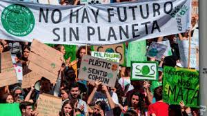

Ambientalismo
Objetivos
- Explicar y entender qué es el ambientalismo
- Identificar algunas acciones que podemos aplicar en nuestra vida diaría
¿Qué es el ambientalismo?
También llamado conservacionismo, política verde o ecologismo es un movimiento social y comunitario con el proposito principal de preservar el medio ambiente.
Debemos recordar no confundirlo con el termino de ecología, pues ambientalismo se refiere más acciones que realizamos a partir de los conocimientos de la disciplina cientifica
¿Para que nos sirve el ambientalismo?
Algunos de sus fines son preservar el medio ambiente, prevenir la extinción de especies animales y vegetales o crear conciencia en la población sobre la responsabilidad humana en las alteraciones del ecosistema a través de acciones que la gente podría realizar
Acciones que podemos implementar en nuestra vida diaria
- Separa la basura
- Usa productos que puedan reutilizarse
- Apaga las luces
- Consume frutas y verduras ecológicas
- Evita dejar los aparatos enchufados
- Cierra los grifos correctamente
- Muévete en transporte público
- Lleva tus propias bolsas al supermercado
- Recicla todo lo que puedas
Mi conclusión:
Creo que el ambientalismo se refiere a algo mas informal basado en la ecología que brinda los conocimientos necesarios para basarnos, está más enfocado en que las personas realicen acciones para aportar su pequeño grano de arena que aunque parezca poco si todos loo hacemos se convierte en un gran cambio